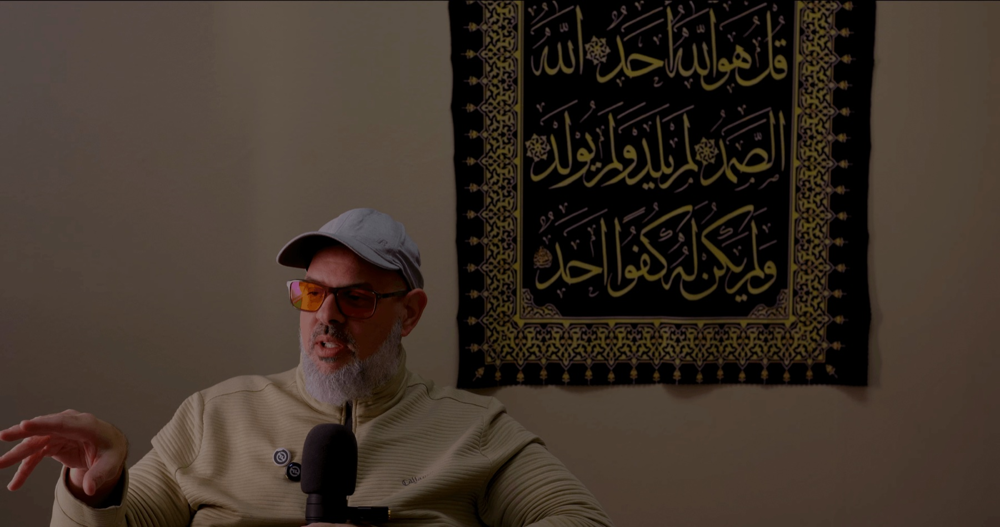

Learning
Imām Marc teaches a variety of classes throughout the year. The schedule below is what he is currently teaching. Class days and times can occasionally change so always check the schedule here on the website for the most up-to-date times.
Ḥalaqah (Study Circle)
This Ḥalaqah discusses a variety of important topics related to faith and everyday life. New Muslims, the youth and the family will feel right at home. It’s also an opportunity to ask questions.
Day
Friday
Time
After Maghrib (8:15PM)
Fajr Club
FC has gained a well-earned reputation as being an opportunity to really connect with others in the community by bonding over Imām Marc’s famous coffee! Breakfast is served and its all hands on deck!
Day
Sunday
Time
5:15AM
Understanding the Qur’ān
This is Imām Marc’s tafsīr class, a class which explains the Qur’ān and dives deeper into its meaning.
Day
Sunday
Time
7AM

By default all of the classes and activities at Middle Ground are for men and women. Children are also welcome to attend so long as they are under parental observation. We feel strongly that the best way to learn is as a family.